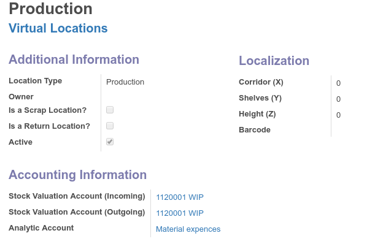
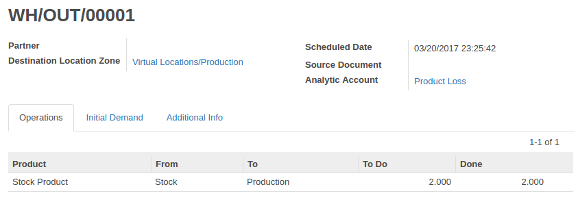

Enhance your analytic accounting with stock moves
Now you can track expences on virtual locations when doing scrap, inventory loss or manufacturing.
When incoming stock valuation account is debited corresponding analytic entry will be created and linked to journal move.

Easily link Analytic Account to any Stock Moves
Debit accounting entries will contain analytic account reference.
